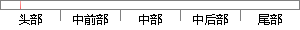

时差频差定位克服了单站无源定位的缺陷，与测角交叉相比具有较高的定位精度，且最少只需要双站就可以完成，定位体制较好。
片段位置图

相似结果|
相似片段 1：信号传播到两架无人机处还会产生频差。利用时差和频差可以联立定位方程，在辐射源高度信息已知的情况下，可以求得其三维坐标，实现对辐射源的定位。时差频差定位克服了单站无源定位的缺陷，与测角交叉相比具有较高的定位精度，且最少只需要双机
|
※ 片段修改建议 ※
近似词参考：- 克服：降服 战胜
- 缺陷：缺点
- 交叉：交织
- 相比：比拟
- 具有：具备 拥有
- 最少：起码 至少
- 就可以：就能够 就能
- 体制：体系体例
系统自动生成语句：时差频差定位降服了单站无源定位的缺点，与测角交织比拟具备较高的定位精度，且起码只需要双站就能够完成，定位体系体例较好。
注：本片段修改建议为系统自动生成，仅供参考。